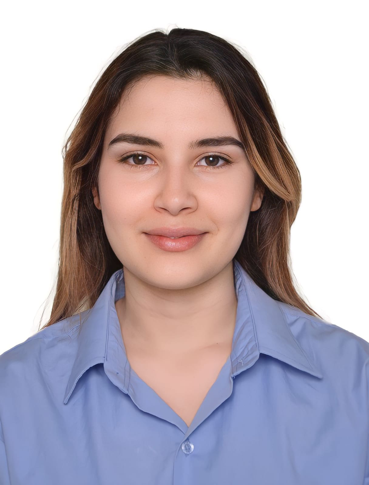

01
Grenoble INP · IDYLICC Technologies · LCIS Laboratory
Chipless RFID Detection & Decoding
RF research combining electromagnetic modelling, VNA measurements and algorithm validation on real data.
HFSSCSTVNAMATLABPythonFPGA
Signal · RF · Embedded Systems · Applied AI
Engineer in Signal and Telecommunications with a background in Embedded Electronic Systems and Biomedical Engineering. I work at the intersection of RF instrumentation, signal processing, embedded electronics and applied AI.

Hands-on work across RF instrumentation, energy harvesting, biomedical sensing and experimental validation.
RF research combining electromagnetic modelling, VNA measurements and algorithm validation on real data.
Hybrid piezoelectric and solar energy recovery, circuit design, PCB routing, assembly and validation.
Custom CNN, CIFAR-10, Fashion-MNIST and SVHN experiments with augmentation and rigorous evaluation.
Frame reconstruction, motion vectors, scrambling and digital watermarking with robustness analysis.
Source-filter modelling, LPC coefficient estimation and speech reconstruction.
OFDM modulation, channel modelling, compensation and performance analysis.